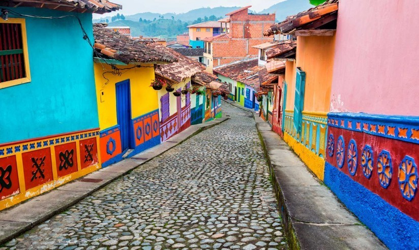

Bogotá con sus aproximadamente 8 millones de habitantes está conformada por gente trabajadora, de múltiples culturas y religiones. En esta hermosa ciudad se centra la actividad económica del país.

La gastronomía típica es parte de nuestra identidad como colombianos. Si hay una comida que nos gusta a todos es el ajiaco, una sopa tradicional Bogotana que podría definirse como un plato nacional.

Estadio Nemesio Camacho el Campín también conocido como el "coloso de la 57" es el escenario que recibe a los dos principales equipos de la ciudad: Millonarios FC y Santafe, cuenta con una capacidad de 36.000 personas, también ha recibido grandes conciertos de artistas como Coldplay, Paul McCartney, Guns and roses y muchos mas.
